First Encounter with AI Infrastructure¶
The preface introduced the origins of this book, its chapter organization, and how to read it. Starting with this chapter, we follow the execution process of a model to understand the systems that support it. AI Infrastructure is the infrastructure that supports AI training and inference, including compute devices, storage and interconnect, and the software that organizes these resources. Training adjusts model parameters using samples; inference uses the trained parameters to process input and produce output.
This chapter first explains how applications express tasks jointly through code, models, and context, then follows the processing of a single request to understand the system, using capacity, compute throughput, and bandwidth to answer concrete design questions: can the data fit, how long must the response wait, and how much benefit comes from adding accelerators or changing data representation. Finally, it reviews how several real architectures took shape, showing how requirements drove system design.
1.1 Why AI Infrastructure Matters¶
1.1.1 The Shift of Programming Abstraction: From Operating Systems to Model Context¶
Consider a document Q&A service as an example. The developer first defines the program flow for reading documents, retrieving content, and displaying results, then hands the user's question and the retrieved material to a language model to generate an answer. The context is the input content available to this model invocation, including task instructions, reference material, and prior interaction results. Keeping the model parameters fixed, changing the instructions, examples, or reference material can change the task the model handles and how it responds.
If this service is asked to review code, the code, test requirements, and callable tools can all be provided to the model together, and the model proposes changes or initiates tool calls; the application runs the tests, adds the results to the context for the next call, and the model continues to make judgments. A tool is a program function that the application can invoke, such as reading a file or running a test. The model decides what to do next; the host program checks permissions, executes operations, and saves results. Completing a task may require multiple model invocations and tool executions.
Abstraction encapsulates complex implementation behind a well-defined interface, letting developers organize programs with fewer concepts. Programmability is the ability of a developer to change system behavior through some interface. Traditional applications express behavior mainly through program code: the compiler translates code into executable instructions, and the operating system manages the resources the program needs to run. Model-driven applications add another important entry point: expressing tasks by selecting a model, organizing context, and providing tools. Behavior that once required writing rules one by one is now decided by the model based on context; code continues to organize the invocation flow, and tool programs continue to access files, networks, and devices through the operating system.10
Figure 1-1 contrasts these two ways of organizing behavior. On the right, the agent organizes context, invokes the model, and executes the tools the model selects. Here, the model interface specifies how the application submits input and receives output. The runtime system behind the interface computes the model's output and preserves the context state that subsequent steps will reuse; the accelerator is a processor suited to executing large amounts of parallel model computation, memory holds parameters and runtime state, and the interconnect moves data between devices. As developers change tasks from the upper layers, the lower layers must translate these changes into concrete computation and data access.
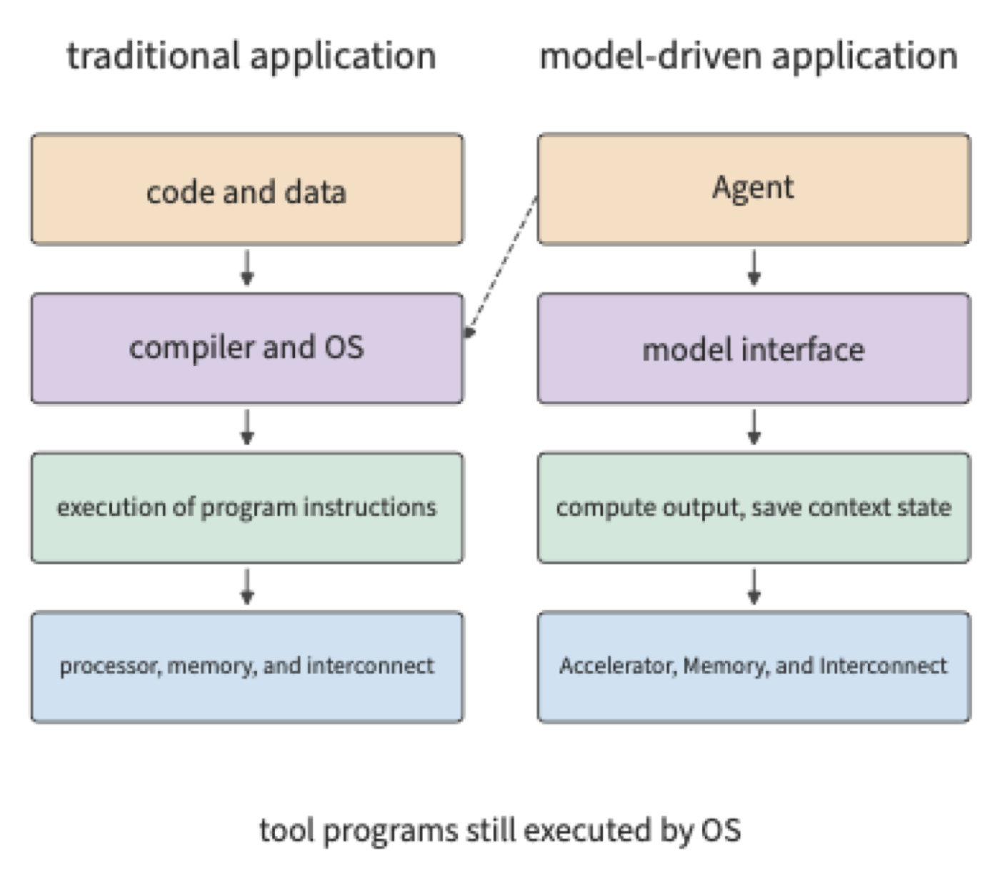
This shift in programmability also changes how model services run. In an AI system, when the same model handles requests from different applications, it uses the same set of parameters. The system can merge multiple requests into a single computation, sharing one read of the parameters, to raise accelerator utilization. This approach is called batching, and the number of requests executed together in one batch is the batch size. At the same time, long documents, long answers, and multi-turn tool calls change the computation volume, state footprint, and waiting time. The same model on the same set of accelerators can show vastly different performance when handling different tasks.
Behind this performance variation lies the mutual influence between model and hardware. From the model design side, compressing the saved state, changing the attention mechanism, or using only part of the model's parameters can change the work the hardware must perform; from the hardware side, storage capacity, data transfer speed, and device connectivity in turn affect which model structures and execution methods are more suitable. Understanding this two-way relationship is necessary to discuss response quality, latency, and cost together, and to explain why a scheme suited to one application may need re-evaluation when applied to another.
In systems built primarily for model training and inference, the layers can be co-designed around the same complete execution process. Model structure defines the computation and data dependencies, the runtime knows when state is produced and used, and the hardware carries out the corresponding computation and transfer. Using this information to reorganize execution can eliminate some of the overhead present in general-purpose implementations. The same model can also handle many different tasks depending on context, supporting diverse application behavior while still allowing the lower layers to be specially optimized for model execution. This shift in upper-layer programmability opens new opportunities for cross-layer joint optimization. This book uses quantitative analysis to study these optimization opportunities, explaining how existing design trade-offs are changing and how new implementations improve training and inference performance.
1.1.2 Six Layers of Division of Labor, from Task to Hardware¶
A request passes through multiple layers of the system in sequence, from submission to completion. A user submits a piece of code, asking the model to find the bug. The application hands the code and question to the model service, the service selects an accelerator to execute the request, the accelerator reads in the weights and input, completes the computation, and passes the generated answer back to the application. If multiple accelerators execute the request together, intermediate results must also be passed between them. Following this path lets us progressively locate where waiting occurs and which data must be moved.
Dr. Heng Liao, Chief Scientist of Huawei Semiconductors, proposed the "eighteen-layer pagoda" to describe the many layers from applications, models, and software systems down to chips, manufacturing processes, and underlying physics. He observed that most people understand only one or a few of these layers, and thus miss many opportunities for cross-layer joint optimization.1 Figure 1-2 draws on this approach, dividing this book's content into six layers:
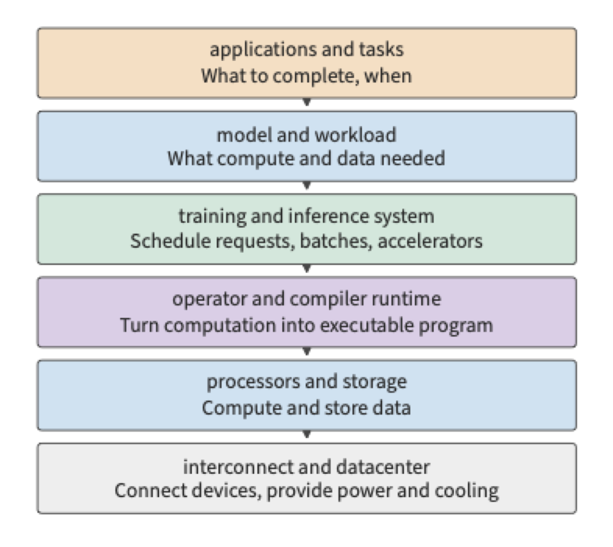
At the top is applications and tasks. Conversation, code generation, voice interaction, and agents that can call tools to advance a task all raise concrete requirements at this layer: what task must be completed, how quickly results must return, and what the cost ceiling is. Training also has its own task objectives, such as completing one model update or one round of pretraining within a given time.
The next layer is models and workloads. Model structure defines what computations to perform and what data to retain; actual workload determines when this work arrives and how long it lasts. A short question and a long document, even when handed to the same model, create different computation and storage demands. Model structure is developed in Chapter 2, and training and inference workloads are developed in Chapter 3.
Training and inference systems organize these demands into executable work. This layer receives requests or jobs, organizes batches, manages runtime state, and decides how to use one or more accelerators. In inference, it must coordinate requests currently being generated with newly arriving requests; in training, it must also organize parameter updates, communication, and recovery. Chapters 8–10 discuss this layer.
Below that is operators and compiler runtime. Operations in a model such as matrix multiplication and normalization (adjusting the numerical scale of values based on statistics) must be translated into programs the processor can execute. This book calls basic operations such as matrix multiplication operators; an operator library provides implementations of these operations, a compiler translates programs into a form the accelerator can execute, and the runtime submits programs and manages resources during execution. Together, these three determine how to tile computation, how to use temporary storage, and when to submit work. The same mathematical expression can have different data access patterns and execution methods, and Chapter 5 analyzes these differences concretely. Here lies a thread for understanding distributed parallelism as well: a matrix can be split for execution within a single card, and a model can also be divided across multiple cards by sample, sequence, feature, layer, or expert (a subnetwork selected per input in a mixture-of-experts model). Both cases require first determining who computes each piece, then arranging for inputs to arrive and results to be merged. The difference lies in whether the boundary between pieces crosses on-chip storage, GPU memory, or the network. Chapter 6 follows this thread to explain the various parallelism strategies, rather than treating them as unrelated tricks.
Processors and storage execute computation and store data. The CPU is the central processor that runs general-purpose programs; the GPU is a graphics processor skilled at parallel execution of large numbers of similar operations, and is now widely used for model computation as well; the NPU is a processor designed for neural network operations. Main memory holds the data the CPU uses, GPU memory holds the data the GPU uses, and on-chip storage sits inside the processor chip, letting compute units read data locally. The compute unit first reads the input, then executes the operation, and finally writes back the result. Chapter 4 explains accelerator design starting from the relationship between compute capability and data access speed.
At the bottom is interconnect and the datacenter. Devices exchange data through interconnects, servers and larger collaboration groups connect through networks, and power delivery and cooling determine how resources can be deployed. Chapters 6 and 7 discuss supernodes and datacenter networks, and Chapter 12 further extends execution locations to edge, on-device, and cloud.
The six layers describe the main division of labor, but some capabilities span multiple layers. Resource scheduling, execution environment, observability, and billing must be organized using information from multiple layers; process technology, packaging, power delivery, and cooling determine how devices can be manufactured and deployed. Networking, too, does not operate only at the bottom: models, operators, and services that require cross-device collaboration must all pass through some concrete interconnect.
Looking down through these six layers, a task gradually becomes concrete computation and data access; looking up, the available storage capacity, compute throughput, and bandwidth of the accelerator determine how large a model the system can run, how many requests it can handle concurrently, and how quickly it can respond. The interfaces between these layers are also entry points for joint optimization. When a model changes its state representation, storage and communication demands change; when a compiler fuses adjacent operators, the location where intermediate results are stored changes; when the runtime lets accelerators hand off directly, the number of times the host is involved changes.
1.1.3 The Processing of a Single Generation Request¶
An inference instance is a set of execution resources capable of independently completing a model request, and it may consist of one or more accelerators. Each request is handled by one such instance. Figure 1-3 shows the division of labor between request assignment and execution within an instance: the service router is the software that chooses where a request will execute; once the router selects an instance, the instance itself arranges for accelerators to execute the model. Only by first clarifying who is responsible for execution can we determine where a given set of weights should reside and to whom a given intermediate result should be passed.
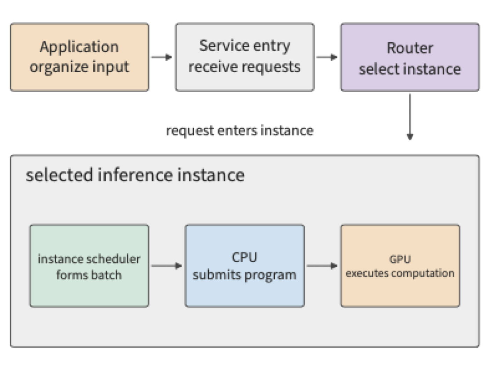
The context includes user input, the existing conversation, retrieval results, and previously generated content. The application organizes this information into a request and submits it to the model service entry point. After the entry point verifies access permissions and checks quota and request content, the router selects an instance based on the target model, instance load, and other conditions; an instance may run on a single card or be distributed across multiple cards. Once an instance is selected, the instance itself coordinates these cards.
The text is then converted into a sequence of tokens. A token is the basic unit the model uses to process text, which may correspond to a character, part of a word, or another fragment; the number of tokens for a given piece of text is determined by the tokenization result. Text conversion can be performed by the instance itself or by a shared front end. The instance scheduler places the request into a queue, packs it into a batch, and allocates space for its state. The runtime on the CPU then submits computation tasks to the GPU, and the GPU executes the corresponding operators.11
The model first processes the input; this stage is called prefill. It then generates new tokens step by step; this stage is called decode. Subsequent steps reuse state saved earlier, including the KV cache, which stores the key and value vectors produced by context tokens for use in the attention computation of later positions. Key and value are data representations used by the attention mechanism; Chapter 2 explains how they are produced, together with the specific operations involved. The generation loop is driven continuously by the scheduler inside the instance, with the previous step's output becoming the next step's input. The generated tokens are converted to text by output processing and streamed back over the connection; if the output requires a tool call, the application runs the tool, adds the result to the context, and issues a subsequent call.
Among the data reused repeatedly across these computation steps, the model weights come first. Model weights are the numerical parameters, obtained through training, that transform input into output. Weights are loaded from storage when an instance starts or when the model is switched, and remain resident in GPU memory (called residency) thereafter, serving many requests. During generation, the GPU's compute units read the current layer's weights and context state from GPU memory, perform the computation, and pass the result to the next layer. The same data thus undergoes two kinds of movement at different frequencies: loading brings the model onto the accelerator, while execution repeatedly brings the needed data to the compute units. In a multi-card instance, the intermediate result computed on one card must also be passed to other cards before subsequent computation can continue. An intermediate tensor is a multi-dimensional numerical array produced by one operation and passed to a subsequent operation; a matrix is a two-dimensional tensor. An external request may consist of only a short piece of text, yet the data moved internally includes far larger weights, state, and intermediate tensors.
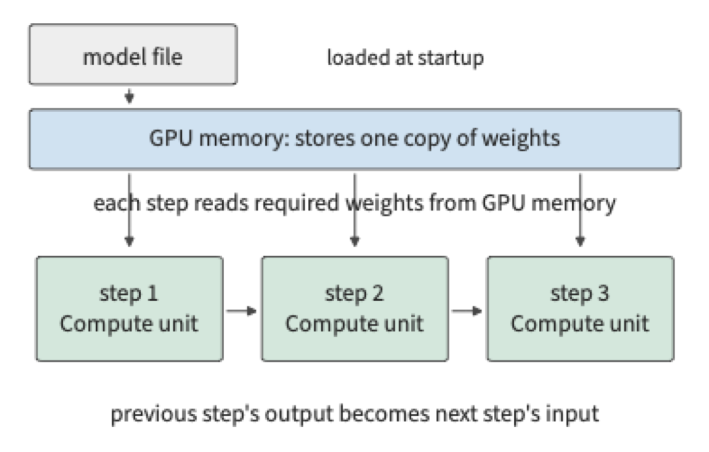
Figure 1-5 shows the hardware corresponding to these software functions. A datacenter includes the entry point and CPU services, shared storage, and an accelerator resource pool made up of multiple supernodes. A supernode is a group of accelerators tightly coupled through high-bandwidth interconnect, which may span multiple servers or compute trays (pluggable units within a rack that house CPUs and accelerators).
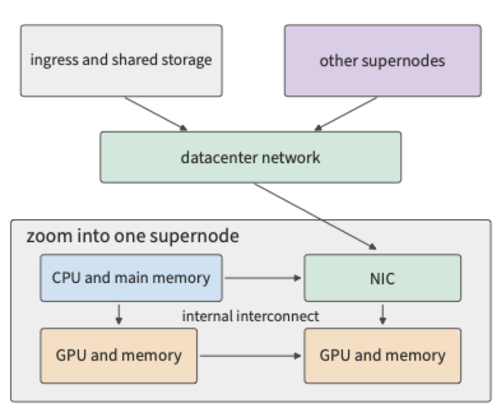
Within a server or compute tray, the CPU connects to main memory and is responsible for host programs and execution control; each GPU connects to its own GPU memory, executing model computation and holding the data needed at runtime. HBM (high-bandwidth memory) is a type of GPU memory commonly used in accelerators, providing data continuously through a wide interface. The CPU and GPU can be connected via PCIe (a high-speed peripheral interconnect), and GPUs can also exchange data directly through a dedicated high-speed interconnect. The NIC connects the local machine to the network. In systems that support direct memory access, data can be written by transfer hardware directly into a designated memory region, with the CPU responsible for initiating and managing the transfer; Chapter 7 explains this handoff in more detail.
The interconnect within a supernode is usually called scale-up, focused on letting a group of accelerators compute together at low communication overhead; multiple supernodes are then connected through NICs and switching networks, called scale-out, used to expand cluster scope. Both must account for bandwidth, latency, congestion, and failures, but they differ in collaboration scope and cost. Take NVIDIA's GB200 NVL72 as an example: the official design organizes 36 Grace CPUs and 72 Blackwell GPUs within a single rack, with the 72 GPUs collaborating directly through NVIDIA's high-speed GPU interconnect, NVLink, forming a single interconnect domain, while the cluster network handles external connectivity. This organization expands the scope of tight collaboration from a single machine to a rack, letting the model distribute weights and state across more accelerators, with frequent handoffs handled by the rack's internal interconnect.12
The AI network and the traditional datacenter network thus divide their responsibilities accordingly. The service entry point carries requests, shared storage provides model files, and the accelerator interconnect carries intermediate results during computation. These three types of traffic differ in frequency, data volume, and dependency structure: model files can be loaded in advance, but the current layer's partial results must arrive promptly before the next layer can proceed. Physical connectivity therefore directly affects the model's execution time.
Exercise 1-1 [Extension]: Weight Reads, State Growth, and Data Transfer in a Single Request
Following Figures 1-3 through 1-5, add the growth of KV state as output increases, then separately mark model file loading, per-step weight reads, KV appends, and cross-card result transfer. If the answer grows from 100 tokens to 1000 tokens, which data is loaded only once, and which access grows? If a single instance is replicated into two instances, how do weight capacity and request routing change?
A single model execution is shaped both by single-card capability and by how accelerators are connected. A single card's compute throughput and storage bandwidth determine the time for local computation and reads/writes, while multi-card collaboration adds data exchange and waiting. This chapter first estimates single-card execution; later chapters apply the same method to supernodes and networks.
Let us introduce a set of real models that will run through the entire book. DeepSeek V4 and V4.1 Flash provide a thread we can follow continuously. V4 has already changed storage and read requirements through context compression and sparse access, while V4.1 Flash further redivides responsibilities inside the model. A traditional decoder-only model typically passes input tokens through the full backbone, building up the state needed for generation layer by layer; V4.1 Flash adopts a Causal Encoder-Decoder (CED) architecture, in which the encoder forms a contextual representation and the decoder draws global information from these representations. Large numbers of input tokens therefore need not pass through the computation of the decoder body; when generating a new token, the model still passes through the encoder and decoder in sequence. The execution paths for input and output are asymmetric, allowing the model to reallocate its computational investment for workloads such as agent tasks, where input is large and output relatively small.18
This is an architecture-level choice, and it also changes what the system must save and transmit. This book will develop its discussion around the same type of session: an agent waits for a tool to return, restores the prior context, processes new input, and continues generating. Chapter 2 explains the structure and state of CED, Chapter 3 breaks down input and generation workloads, Chapters 4–7 trace accelerator execution and data paths, Chapters 8 and 9 discuss how to cache state and allocate requests, and the final chapters compare the execution results for complete tasks. The open-source model Qwen3 provides basic worked examples for establishing the calculation methods; V4/V4.1 are used to examine how model and system change together.
1.1.4 From Stored Programs to Dataflow Execution¶
A useful way to understand an AI accelerator is to imagine a building. If all the toilets are on the first floor, everyone upstairs must go downstairs, and distance and congestion limit the building's efficiency. Putting toilets on every floor shortens the trip, but uses more space and requires more plumbing, maintenance, and capacity planning. Registers, caches, on-chip buffers, device memory, and host memory are data-access points with different distances, capacities, and costs.
The evolution of computer architecture has continually addressed this distance. Stored-program computers keep instructions and data in addressable memory; as processors became faster than the memory system could supply data, registers, multilevel caches, prefetching, vector instructions, and parallel execution were introduced to reduce waiting. GPUs and AI accelerators make data reuse more explicit: threads cooperate through shared memory, matrix units reuse operands along fixed paths, copy engines overlap movement with computation, and compilers arrange tiles, layouts, and buffers.
Transformer prefill, decode, KV access, and expert routing have different reuse ranges, so one automatic caching policy cannot cover them all. Accelerators therefore have to co-design compute units, local storage, and data paths; the following chapters show how these resources turn model execution into work that can be computed, moved, and scheduled.
1.2 Key Metrics for System Design¶
1.2.1 Judging a Scheme by Order of Magnitude¶
Before estimating single-card execution, we need to know roughly how long various basic operations take. In a 2009 talk, Jeff Dean presented a widely cited table titled "Numbers Everyone Should Know." The table includes access times for cache and memory as well as times for disk and network operations. This table embodies a practical way of working: before writing a program or building a system, first estimate how much time and how many resources the main operations will require.2
Below is the complete list of the 12 operations and values from the original slide. All times are given in ns (nanoseconds, one billionth of a second); 1 μs (microsecond) equals 1000 ns, and 1 ms (millisecond) equals 1000 μs. For data units, 1 byte equals 8 bits; bit/s denotes bits transmitted per second, and the G in Gbit/s denotes one billion. The capacity units KB, MB, GB, and TB denote \(10^3\), \(10^6\), \(10^9\), and \(10^{12}\) bytes respectively; KiB, MiB, and GiB denote \(2^{10}\), \(2^{20}\), and \(2^{30}\) bytes respectively. These figures correspond to the hardware environment of 2009 and are used here to understand the order-of-magnitude relationships between different operations.
Cache holds data that is likely to be reused soon; L1 cache is typically smaller and closer to the compute core than L2 cache. Branch prediction is the processor's guess about which instruction path will execute next; when the prediction is wrong, execution must be redone. A thread is a unit of independently scheduled and executed instructions within a program; a mutex limits multiple threads from accessing the same shared data simultaneously. A disk seek is the process of a mechanical disk moving its head to locate the target track. Zippy was the compression library Google used at the time. These operations involve computation, synchronization, storage, and networking respectively, and their durations can differ by many orders of magnitude.
| Operation | Time (ns) |
|---|---|
| L1 cache reference | 0.5 |
| Branch mispredict | 5 |
| L2 cache reference | 7 |
| Mutex lock/unlock | 25 |
| Main memory reference | 100 |
| Compress 1K bytes with Zippy | 3,000 |
| Send 2K bytes over 1 Gbit/s network | 20,000 |
| Read 1 MB sequentially from memory | 250,000 |
| Round trip within same datacenter | 500,000 |
| Disk seek | 10,000,000 |
| Read 1 MB sequentially from disk | 20,000,000 |
| Packet round trip from California to the Netherlands | 150,000,000 |
Take three of these historical figures: a main memory access is about 100 ns, a round trip within the same datacenter is about 500,000 ns, and a disk seek is about 10,000,000 ns. Converting units, these are 0.1 μs, 0.5 ms, and 10 ms, respectively, as shown in Figure 1-6.
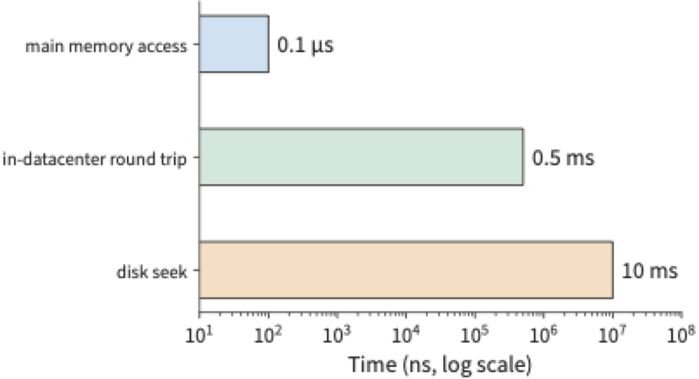
By these figures, a disk seek takes roughly one hundred thousand times as long as a main memory access. If a request must wait for multiple such accesses in sequence, these delays accumulate, extending the request's completion time. If a request must first locate a piece of data before it can determine the location of the next access, the processor must wait through the entire storage access process even if it performs very little computation between the two accesses.
For example, suppose a request performs 20 disk seeks in sequence, each taking 10 ms, with total CPU computation of 1 ms; the total time is 201 ms. Doubling the computation speed saves only 0.5 ms; laying the relevant data out contiguously, reducing the number of seeks from 20 to 10, saves 100 ms. These two optimizations act on computation and waiting respectively, and the difference in benefit comes from how much each occupies in the original execution time.
Once time is broken down this way, we can compute the direction for optimization: the larger the share of total time a given part occupies, the greater the improvement to the whole from shortening that part. In the seek example above, computation accounts for only \(1/201\) of the total time; even if this part were eliminated entirely, the total time would decrease by only about \(0.5\%\).
Generalizing this relationship gives the formula for overall speedup. If a fraction \(f\) of the original execution time can be sped up by a factor of \(s\), while the rest of the work and execution order remain unchanged, the overall speedup is:
This is Amdahl's law. Even if this portion is sped up to the point where its time becomes negligible, the overall speedup cannot exceed \(1/(1-f)\). When the number of seeks is reduced, it is the waiting portion — which occupies the largest share — that is shortened, so this optimization has far more effect on total time than CPU acceleration would.
Example: Using the same AI coding tool, why do different teams see different overall speedups? Suppose completing a development task requires passing sequentially through communication, coding, review, and approval stages, and an AI coding tool speeds up coding to 5 times its original speed, while the time spent in other stages stays unchanged. In a large-company team with many layers of coordination, coding may account for only 20%–30% of the original total time, with the rest spent on meetings, cross-team communication, and approvals. Substituting into the formula, the overall speedup is only about 1.19–1.32 times. For example, if the task originally took 100 hours, with 20 hours spent on coding; once coding is shortened to 4 hours, the other stages still take 80 hours, for a total of 84 hours.
In a startup team with lower communication costs, suppose coding accounts for 70%–80% of the original total time; the same coding speedup yields an overall speedup of about 2.27–2.78 times. Taking coding at 80% as an example, the original 100 hours becomes \(20+80/5=36\) hours.
Amdahl's law applies to any complete workflow in which only part of the process is sped up. CPUs, model inference, and software development can all be analyzed with the same question: what fraction of the original time did the sped-up part occupy, and where does the remaining time go? To further shorten delivery time, one must continue improving communication, review, and approval. Gains in local speed must ultimately be measured against the complete task.
The method embodied in this table can be applied directly to model execution: first determine what resources each piece of work uses, then compare the time required.
1.2.2 What key metrics are needed to analyze an AI system¶
Suppose a task must simultaneously hold \(M\) bytes, execute \(F\) floating-point operations, and read/write \(R\) bytes through some storage interface. The accelerator provides capacity \(M_{\mathrm{cap}}\), compute throughput \(\Pi\), and interface bandwidth \(\beta\). These three types of requirements must each be compared against the resources the accelerator provides:
Capacity determines whether the required data can be held at once; the latter two terms convert the workload into time. A piece of data can be stored once and read multiple times, so \(M\) and \(R\) must be computed separately. If \(\Pi\) and \(\beta\) are taken at their peak values, the result is the lower bound on the time needed to complete the specified computation and data movement.
Peak values are determined by the number of compute units on the chip, the operating frequency, and the storage interface, so this lower bound is the hardware's physical limit — no matter how the software is organized, it cannot go faster. The ratio between this lower bound and the actual elapsed time \(T\) reflects how much of the hardware's capability is actually being used. The ratio on the compute side, \(F/(\Pi T)\), is called MFU (model FLOPs utilization), and the ratio on the bandwidth side, \(R/(\beta T)\), is called MBU (memory bandwidth utilization); neither exceeds 1. This book uses these two ratios repeatedly, and they always answer the same question: how far is the design from the hardware's physical limit?
Besides capacity, compute throughput, and bandwidth, we also need to understand operation latency. Below we explain how each of these four types of metrics enters an estimation.
Capacity answers how much data can be held at once. For example, how much GPU memory an accelerator card has determines whether it can hold the model weights, context state, and the runtime's temporary workspace. Capacity is measured in bytes.
Compute throughput answers how many operations can be completed per unit time. FLOP commonly denotes one floating-point operation, FLOPs denotes the total number of operations, and FLOP/s denotes floating-point operations per second. GFLOPs and TFLOPs denote one billion and one trillion floating-point operations respectively, while GFLOP/s and TFLOP/s denote the corresponding rates per second. In matrix computation, one multiplication plus one addition is usually counted as two operations. Peak matrix throughput corresponds to a specific input precision, accumulation precision, and sparsity condition. Dense computation operates on the full matrix; sparse computation exploits zero elements or a prescribed sparse structure to skip part of the work.
Bandwidth answers how much data can be transferred per unit time. GPU memory bandwidth describes the data-movement capability between memory and the chip, while inter-card link bandwidth and network bandwidth describe the capability along other paths. When estimating a particular segment of transfer, use the bandwidth of that segment's interface.
Latency answers how long you must wait after initiating an operation. Even a high-bandwidth interface may have non-negligible startup or round-trip time. When transferring a large data block, the time is mainly determined by the ratio of data quantity to bandwidth; when requests are small and must be waited on one at a time, startup and round-trip time may dominate.
Take a real accelerator as an example. H100 is a generation of NVIDIA GPU, and SXM refers to the module form factor used in this example. BF16 is a floating-point format in which each number occupies 16 bits (2 bytes), and FP32 is a floating-point format in which each number occupies 32 bits (4 bytes); matrix multiplication can read BF16 inputs while storing accumulated results in FP32. The H100 SXM has a memory capacity of 80 GB, HBM bandwidth of 3.35 TB/s, and a dense matrix peak throughput of about 989.4 TFLOP/s with BF16 input and FP32 accumulation.3
Placing the H100 alongside NVIDIA's A100 80GB SXM and the GeForce RTX 4090 gives a quick-reference table of GPU resources. The three use the Hopper, Ampere, and Ada architectures respectively. Capacity in the table uses the vendor's nominal GB, bandwidth uses decimal TB/s, and matrix compute throughput uniformly uses the peak value for BF16 input, FP32 accumulation, dense computation. The last row is obtained by dividing 1 GB by the memory bandwidth.16
| Resource or operation | RTX 4090 | A100 80GB SXM | H100 SXM |
|---|---|---|---|
| Memory capacity (GB) | 24 | 80 | 80 |
| Memory bandwidth (TB/s) | 1.008 | 2.039 | 3.35 |
| BF16 matrix peak (TFLOP/s) | 165.2 | 312 | 989.4 |
| Time to read 1 GB at peak bandwidth (ms) | 0.99 | 0.49 | 0.30 |
This table provides the hardware performance data needed to convert a workload into time. For example, if the read/write volume stays constant while bandwidth doubles, \(R/\beta\) is halved; if the computational load stays constant while compute throughput doubles, \(F/\Pi\) is halved.
1.2.3 Converting between parameter storage and link bandwidth¶
These four types of metrics must be mapped onto a specific workload before they can be used for estimation. The first step is to convert the model's parameters into a storage byte count, to determine whether the accelerator can hold it; the second step is to divide that byte count by bandwidth, to estimate how long it takes to move that data.
Take the real model DeepSeek-R1-Distill-Llama-70B as an example. This model is based on the Llama architecture and is a dense model (every token uses all parameters in computation); its published weights contain about 70.554 billion parameters. The B in the name denotes billion, and 70B is an approximate figure for the parameter count; the variable \(B\) in later formulas denotes the number of requests in a batch. Let \(N\) denote the parameter count and \(b_W\) denote the number of storage bytes per weight. BF16 uses 2 bytes per weight, so the total number of bytes in the published weight files is13
This section consistently uses decimal GB, i.e., \(1\ \mathrm{GB}=10^9\) bytes; the binary unit GiB is \(2^{30}\) bytes. So 141.11 GB is about 131.42 GiB. Only after converting both the accelerator's available storage capacity and the weight size to the same unit can they be subtracted.
141.11 GB of weights exceeds a single H100 SXM's nominal 80 GB of memory. Splitting the weights evenly across two cards gives about 70.55 GB per card, leaving about 9.45 GB free on each. Sharding means letting different accelerators each hold and compute over a portion of the model. Intermediate results must be exchanged between the two cards; Chapter 6 discusses specific sharding and communication methods.
The storage precision of the weights can also be changed. Quantization represents values with fewer bits — for example, approximating original 16-bit floating-point weights with 8-bit integers, and using a scale (a scaling factor) to convert the integers back into approximate values within the corresponding range. Each quantized weight goes from 2 bytes to 1 byte, so the memory footprint drops significantly.
The grouped quantization scheme used in this book shares one scale per 128 weights, while keeping some parameters in BF16. Computed against the real model's configuration, the 8-bit scheme's full weights plus quantization overhead occupy about 73.73 GB, which fits on a single H100 SXM, leaving about 6.27 GB free. Figure 1-7 places both approaches on the same capacity scale: BF16 weights split across two cards, or quantized weights fitting on a single card.
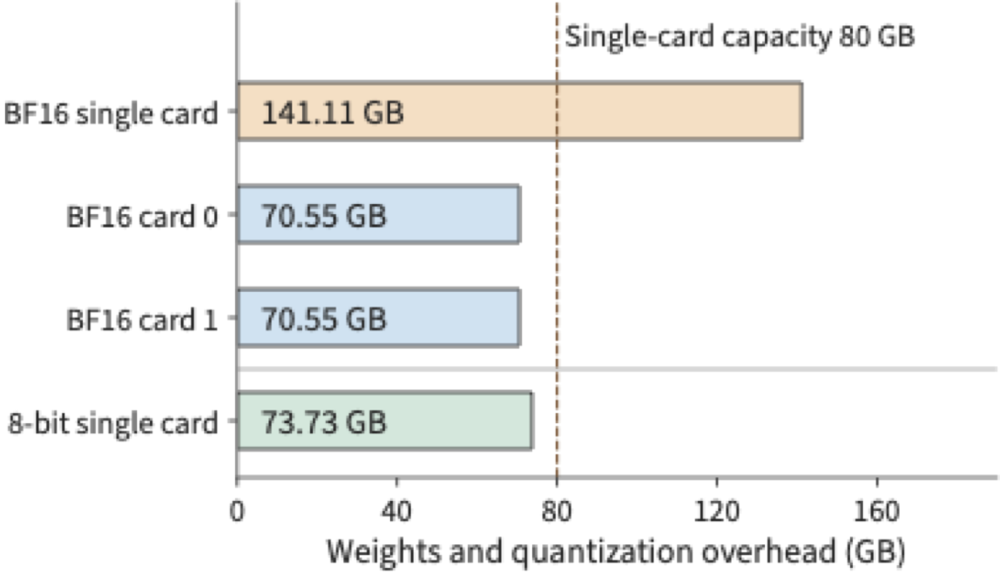
How the KV cache adds to a single request's memory requirement. When generating text, GPU memory must also hold the KV cache for direct reuse in subsequent computation; operator execution also requires a temporary workspace. The capacity check should therefore be written as
Here \(M_W\) is the weights plus quantization overhead, \(M_{\mathrm{state}}\) is the request's context state, \(M_{\mathrm{work}}\) is the workspace, and \(M_{\mathrm{cap}}\) is the accelerator's available storage capacity. Take, for example, a request of 8192 tokens for this model: the BF16 KV cache is 2.5 GiB, about 2.68 GB; reserving another 2 GiB, about 2.15 GB, for the workspace, the 8-bit scheme totals about \(73.73+2.68+2.15=78.56\) GB, which fits within this capacity budget. Chapter 2 will derive the size of the KV cache from the model's layer count and attention structure, and compute the memory requirements for longer contexts and more concurrent requests.
Switching to the RTX 4090 with a nominal 24 GB of memory, the same 73.73 GB of weights exceeds the combined 72 GB of three cards. Under the same nominal capacity budget, holding just the weights requires at least four cards; KV and workspace must also be checked card by card. With the same model and precision but different per-card capacity, the number of accelerators required changes.
Network transfer requires the same kind of unit conversion. Network bandwidth is often measured in bit/s, and 8 bits make 1 byte, so a 400 Gbit/s ConnectX-7 NIC has a line rate (the link's nominal transfer rate) equal to 50 GB/s. At this line rate, transferring 1 GB of data takes 20 ms. Each transfer also requires startup time, and protocol overhead and other traffic sharing the link also affect the bandwidth an application actually obtains. Accounting for these factors along the transfer path allows for a more detailed estimate of communication time.
Exercise 1-2 [Core]: Memory requirements and multi-card allocation under different weight precisions
DeepSeek-R1-Distill-Llama-70B's BF16 weights occupy 141.11 GB, and its 8-bit quantized weights occupy 73.73 GB. Deployed on H100 SXM cards, each with 80 GB of memory. Reserving 5 GB per card for state and workspace, determine whether single-card deployment and a scheme splitting the weights evenly across two cards can each hold the model. Then consider two cards with different memory capacities: a 48 GB RTX A6000 and an 80 GB H100 SXM; determine, for each precision, whether deployment is feasible, and for any feasible scheme give one way to allocate the weights. Finally, convert 400 Gbit/s to GB/s, and find the ideal time to transfer 1 GB.
1.3 Estimating a single model execution with a few numbers¶
1.3.1 Generating one token: what to check first¶
Example 1-1: How can a 70B model's single-step generation approach a 10 ms target? Given a single H100 SXM, can the DeepSeek-R1-Distill-Llama-70B from the previous section generate a new token within 10 ms? First consider one byte of storage per parameter, then compare doubling compute throughput, doubling bandwidth, and within-batch weight reuse.
Solution: first check memory capacity, then compute the FLOPs and the read volume.
To simplify hand calculation, approximate this model's parameter count as \(N=70\times10^9\), and first estimate the data volume of the main weights at one byte per parameter, converting to BF16 after loading for matrix computation. A single request processes one new token per step, and each step reads through these weights once from GPU memory.
Estimation conditions: weight reads and matrix computation fully overlap. Capacity uses the 73.73 GB figure from the previous section, which includes quantization overhead; this section approximates the main weight read volume as 70 GB. The time model counts only the multiply-add for the main weight matrices and one complete weight read, using the BF16 matrix peak and HBM bandwidth from the resource table; reads and computation are estimated assuming full overlap.
The single-request capacity budget was already checked in the previous section. As for generation speed, once the weights are loaded into GPU memory, each step still needs to send the weights involved in computation to the compute units; under the above approximation, each step reads about 70 GB.
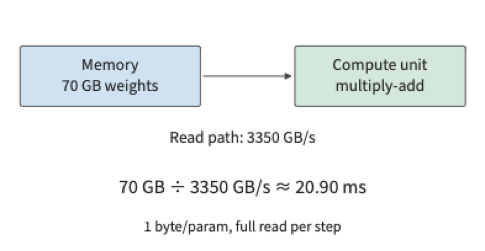
This 20.90 ms read overhead recurs at every generation step. For a single request, the next step's input is determined by the current output, and subsequent steps must proceed one after another along this dependency chain.
The computational load can also be approximated. In one matrix-vector multiplication, each weight typically participates in one multiplication, and the product is then accumulated into the result; counting multiplications and additions separately, this corresponds to roughly two floating-point operations. So the main matrix computation load in this example is approximately:
The origin of \(2N\) is this: in a projection (a linear transformation applied to a feature vector using a weight matrix), each weight is multiplied by the corresponding component of a token's feature vector, and the product is then accumulated into the output. The more weights a parameter matrix has, the larger this workload becomes; as the number of tokens processed together in a batch increases, the same weight matrix processes the feature vectors of more tokens, and the computational load increases accordingly. Chapter 2 will expand to a real model, adding attention interactions that vary with context length on top of this linear work.
Letting the batch size be \(B\), and letting these \(B\) requests share one weight read, we obtain three quantities for this instructional model:
The first two expressions happen to be equal at this step because the weights are stored once and read once. When executing the next generation step, the resident amount is still \(M_W\), but another read of \(R_W\) is incurred. Increasing \(B\) increases the computational load for this step: the same set of weights must now be multiplied and accumulated against the current input token vectors of more requests. Chapter 2 will further add each request's independent context state.
1.3.2 How long do computation and reading each take¶
Dividing \(F=140\ \mathrm{GFLOPs}\) and \(R_W=70\ \mathrm{GB}\) by their respective resource capabilities gives two time lower bounds for a single request.
The lower bound on weight read time is about 148 times that of matrix computation. At nominal compute throughput, the matrix operation takes very little time; but GPU memory takes much longer to deliver the weights to the compute units. All of this data must be read in before the current step can complete.4
The reason is that in this example, each weight read is used for only one multiply-add. The compute units quickly finish processing the data already read, and then have to wait for more. Increasing compute throughput can only shorten the multiply-add time; it cannot speed up memory reads.
Whether these two time components should be added together or the larger one taken as the total depends on whether reading and computation can overlap. If data arrives in chunks, the next chunk can continue to be read while the current chunk is being computed; under a simplified fully-overlapped model, the lower bound on the time is:
Once the pipeline reaches steady state, every chunk of data must go through both reading and computation, and the slower of the two determines the processing rate. In this example, weight reading is far slower than matrix computation, so optimization should first target this 20.90 ms read time.
Discussion: how much can compute throughput, bandwidth, and within-batch reuse each shorten generation time? Weight reading alone already takes at least 20.90 ms, which already exceeds the 10 ms target. Even though GPU memory can hold this data, the read speed still falls short of what's needed. First compare the effects of increasing compute throughput versus increasing bandwidth separately.
Doubling compute throughput changes matrix computation time from about 0.1415 ms to 0.0707 ms, while pure weight reading still takes about 20.90 ms — the read lower bound that determines execution time stays unchanged. Doubling HBM bandwidth, however, brings read time down to about 10.45 ms, and the current lower bound drops accordingly. Both changes improve one hardware capability, but they have different effects on task duration.
Another approach is to reduce the amount of data that needs to be read. With the computational load held constant, halving the weights also brings the read lower bound down to about 10.45 ms. Doubling bandwidth doubles the read speed, while halving the weights halves the amount of data to be read; both approaches reach the same result in this calculation. Chapters 2 and 5 will discuss low-bit-width representation formats and conversion processes.
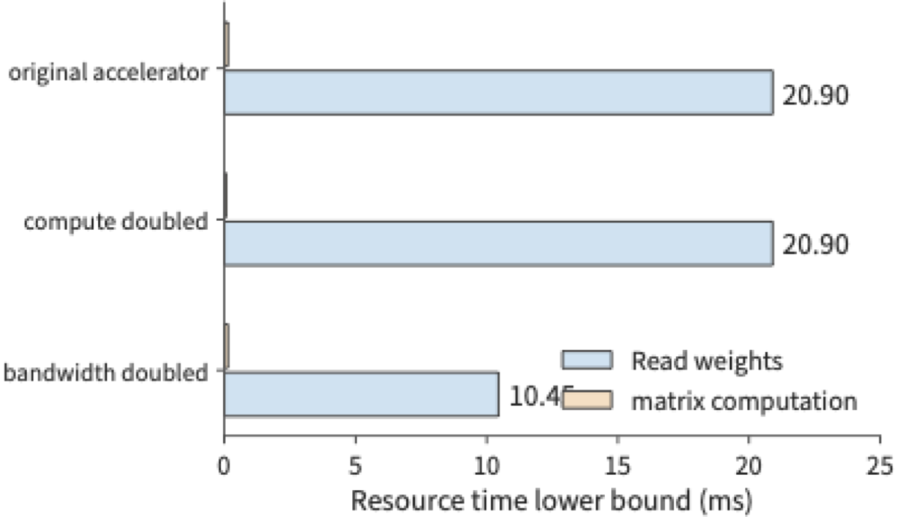
Next, change how requests are organized. Suppose 8 requests are processed together and share one weight read; the batch's total weight read is still 70 GB, while the matrix computation load is about 8 times that of a single request. The matrix computation lower bound is now about 1.13 ms, while the read lower bound remains 20.90 ms. If this batch produces 8 outputs, the weight-read time amortized per output is about 2.61 ms.
Executing the whole batch produces eight outputs, so throughput rises from about 47.9 token/s in the single-request model to about 383 token/s, while each request still must wait for the entire batch to finish executing. Within-batch reuse increases the number of outputs generated in the same amount of time, while single-request latency still depends on the execution and waiting it experiences.
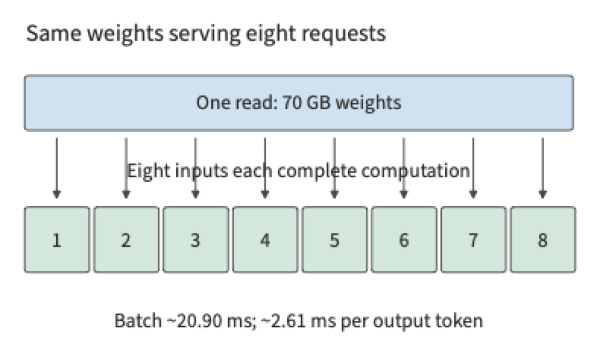
As batch size increases beyond a certain point, computation time catches up to weight-read time. Setting \(2BN/\Pi=b_WN/\beta\) gives the turning point
Taking \(b_W=1\), \(\Pi=989.4\times10^{12}\ \mathrm{FLOP/s}\), and \(\beta=3.35\times10^{12}\ \mathrm{bytes/s}\) in this example gives \(B_*\approx147.7\). In this model, which counts only the main matrix computation and weight read, when batch size is small, adding more requests amortizes the weight-read overhead; once it exceeds about 148, computation time exceeds weight-read time, and further increasing batch size increases the total batch time roughly proportionally. This turning point only compares matrix computation against weight reading and does not account for each request's context state: per the capacity budget in Section 1.2.3, a single H100 SXM has only about 6.27 GB left after holding 73.73 GB of weights, which cannot accommodate the KV of 148 requests.
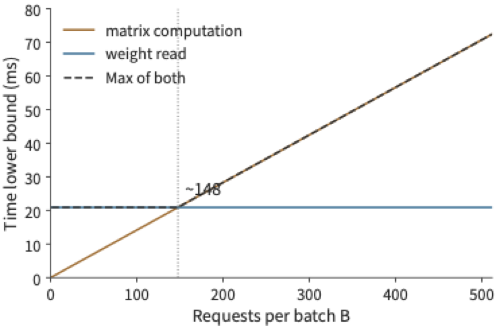
Dividing the per-batch output count \(B\) by the time lower bound in the figure above gives the ideal throughput upper bound for this set of assumptions. Before the turning point, the shared read is amortized across more outputs; after it, computation time grows together with the output count, and the curve gradually flattens out.
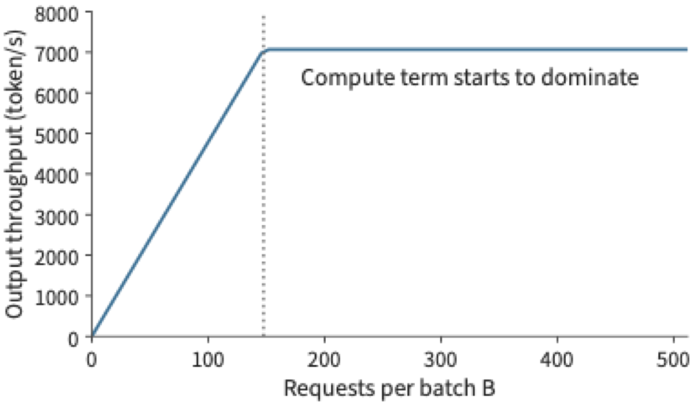
The same turning point can also be described using arithmetic intensity \(I=F/R_W=2B/b_W\), i.e., the number of operations performed per byte of data read. When \(I\) is less than the accelerator's ratio of compute throughput to bandwidth, \(\Pi/\beta\), reading takes longer; above that ratio, computation takes longer. This is the starting point for the Roofline model in Chapter 4.5
Exercise 1-3 [Core]: How bandwidth and batch size affect the single-step generation deadline
Using the model and accelerator from Example 1-1, set effective bandwidth to 70% of nominal and effective compute throughput to 50% of peak. Taking \(B=1,16,64\) respectively, compute the lower bound on batch execution time, the average execution time amortized per output token, and the ideal throughput. The target is no more than 10 ms per request per step: which batch sizes can be judged infeasible for this target based on the time lower bound alone? Then halve the weight read volume while keeping the computational load unchanged, and re-evaluate. Find the batch size \(B_*\) at which computation time equals read time, and explain why a decrease in the execution time amortized per output does not imply a shorter per-step latency for each request.
1.3.3 Checking the estimate against measurement¶
The preceding model predicted two trends: at small batch sizes, throughput increases with batch size; the full-batch time is then limited by one weight read. In real programs, each additional request also adds context access and computation. Figures 1-13 and 1-14 show measurements of Qwen3-8B using BF16 weights on an RTX PRO 6000 Blackwell Workstation Edition. This card has 96 GB of memory, 1.792 TB/s of memory bandwidth, and a dense matrix peak throughput of 503.8 TFLOP/s with BF16 input and FP32 accumulation. vLLM is an open-source inference serving system proposed in 2023 by researchers at UC Berkeley and other institutions; it organizes model requests and executes inference, and its original focus was solving the problem of KV cache wasting memory and limiting batch size. This measurement uses version 0.23 in eager mode, i.e., submitting work to the accelerator item by item in program execution order. Each request has an input of 2048 tokens and generates 256 tokens, and each batch-size setting was measured three times.7 Throughput denotes the number of outputs produced per unit time; time per output token (TPOT) here denotes the average output interval observed by the client.
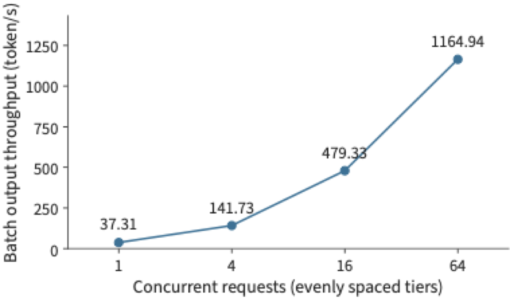
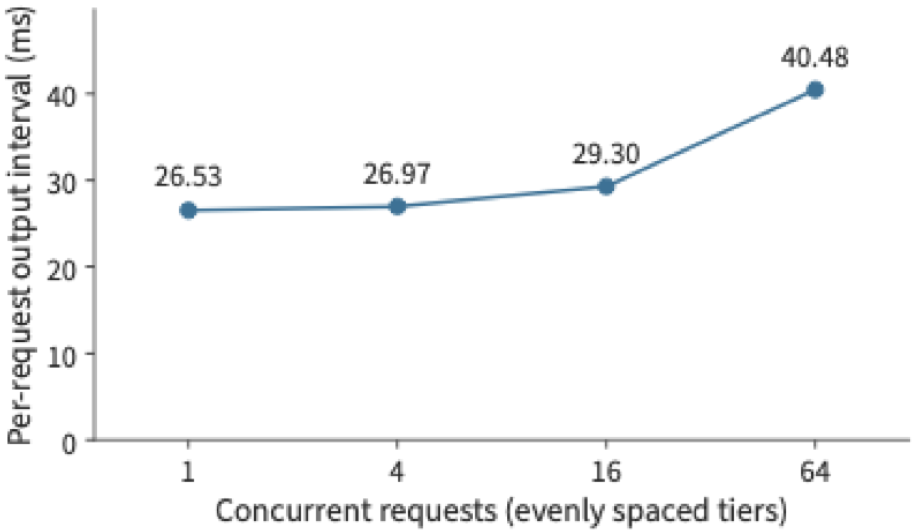
Going from 1 request to 64 requests, full-batch throughput increases by about 31 times, while the average per-request output interval rises from about 26.5 ms to 40.5 ms. Together, the two figures describe the tradeoff of batching: the accelerator completes more requests' worth of work in the same span of time, but each request takes longer to complete one generation step.
The throughput in Figure 1-13 is computed as the full-batch output count divided by the total time to process that batch, which includes input processing time, with the median taken over three measurements. TPOT is computed by first taking, for each request, the time between its first and last output events, dividing by the 255 output intervals in between, then taking the median across requests in the same batch, and finally taking the median over three measurements. The former describes the output speed of the whole instance, while the latter describes the generation pace experienced by a single user. Chapter 3 will further analyze the effects of request arrival, queueing, and a small number of slow requests on these metrics.
This trend can be explained by the distinction between weights and context state. Multiple requests share the model's weights but each maintains its own context state. As concurrency increases, one matrix operation processes the current input token vectors of more requests at once, so the weights get reused more; at the same time, attention computation and context access also increase with the number of requests.
Adding this request-count-dependent work back into the basic model, the per-step time can first be written as
where \(F_1\) is the per-request computational load and \(R_{\mathrm{state},1}\) is the per-request state read/write volume. As batch size increases, the weight-read overhead is amortized across more outputs, but the total state read/write volume across requests also increases. The next chapter will compute these workloads from an actual model, and predict where the turning point — where computation time equals read time — shifts as context grows longer.
Exercise 1-4 [Core]: Checking the batching model against measured throughput and output interval
Using the four concurrency-level measurements marked in Figures 1-13 and 1-14, compute the throughput ratio and the TPOT growth ratio for each concurrency level relative to a single request. Assuming that increasing concurrency is still limited only by the shared weight read, with neither computation nor context access adding to the time, how should throughput scale? Compare this against the actual results, propose two explanations that could be distinguished by measurement, and design a measurement that varies only context length to determine which explanation holds. Specify what must be held constant before measuring: the model, output length, and the timing start/end points.
Looking back at this estimation exercise, throughout we have been answering five questions: what is being moved, how much, how many times, through what path, and who is waiting. The model structure determines which weights are needed, bit width and parameter count determine storage size, within-batch reuse changes the number of reads, the memory interface provides the bandwidth, and execution dependencies determine the waiting. These five questions link model structure, data path, and execution order into a single budget that can be computed term by term.
1.3.4 Why Measurements Fall Short of the Limit: Model Gaps or System Overhead¶
A common approach in systems optimization is to compare against the previous implementation: if the new operator is 30% faster than the old one, that counts as success. But without knowing where the limit lies, there is no way to tell whether that 30% is already close to the ceiling or still an order of magnitude away from it. The correct starting point is to compute the hardware's allowed ceiling from first principles, then see how far the measurement falls from it. Take this chapter's measurement as an example: at a GPU memory bandwidth of 1.792 TB/s, one step of decode reading weights and old KV requires at least 8.62 ms, while the measured output interval at batch size 1 is 26.5 ms — an MBU of only 33%. Such a gap can come from two sources, and they call for different treatment. The first is a gap in the theoretical model: the model above counts only the reads of weights and KV, and omits the vector operations outside attention and the sampling step; adding these terms raises the lower bound and narrows the gap, correcting the model rather than the system. The second is overhead inherent to the implementation: this experiment submitted kernels one by one in eager mode, and each submission passed through host-side Python code, the driver, and PCIe, leaving the accelerator idle between kernel launches; the client also logged results step by step, which consumed additional host time. This overhead has nothing to do with the hardware and can be removed. Distinguishing the two sources requires measurements that change only one condition at a time. On the same card, after disabling the step-by-step logging and re-measuring, the output interval dropped to 12.1 ms; timing only the events on the accelerator, a single model execution step took 10.7 ms, within 20% of the 8.62 ms lower bound.6 This shows that most of the threefold gap came from system overhead on the host side. In later chapters, whenever a measurement disagrees with the lower bound, we check in this order: first ask whether the model has a gap, then ask whether the implementation carries overhead.
1.4 How Requirements Drive Architecture Design¶
The estimates above treated hardware as a given condition; in reality, hardware itself is designed to meet specific requirements. Two kinds of change drive architecture: changes in demand, such as growing business scale or new workloads, and changes in hardware, such as one class of component improving faster than others. Both ultimately appear as shifts in ratios — between computation and data read, between bandwidth and processing capability, between demand growth and single-chip capability. Once such a ratio shifts, a division of labor that used to make sense may no longer pay off. This section first examines three cases: the speech inference requirements Google faced in 2013, Microsoft's requirements for scaling the Azure cloud network in 2015–2016, and Huawei's requirements for organizing multi-device computation and storage over the course of large-model development; it then shows how such changes propagate through AI systems.
1.4.1 TPU¶
The TPU is a tensor processor Google designed for neural network computation; its first-generation product is recorded as TPU v1. The paper introducing this generation recounts a requirements judgment. Google had discussed early on using GPUs in the datacenter, FPGAs (whose hardware logic can be configured after deployment), or dedicated chips, but in some early applications, idle resources in existing datacenters were already sufficient to meet demand. In 2013, a forecast of speech search usage changed the discussion: if every user spent three minutes a day on speech search, meeting this computation demand might require doubling the size of the datacenters. Google therefore pushed forward with a dedicated inference chip design; TPU v1 entered datacenter deployment in 2015, and the architecture paper was published in 2017.8
This judgment can be expressed with a simple formula: let \(Q\) denote the daily request volume and \(F_1\) the compute required per request; the total daily demand is then \(QF_1\). As request volume grows, the idle capacity of existing equipment is eventually exhausted; at that point one can either add general-purpose servers or develop a dedicated processor. The latter carries upfront development cost but can lower the device time and energy consumed per request; the larger the service scale, the more easily the accumulated savings offset the upfront investment.
A dedicated processor can allocate more compute units to matrix operations that recur repeatedly, then use on-chip buffers and data paths to feed those compute units with input. Latency and power requirements determine how compute, storage, and communication resources should be allocated. In this way, changes in application scale translate directly into chip design.
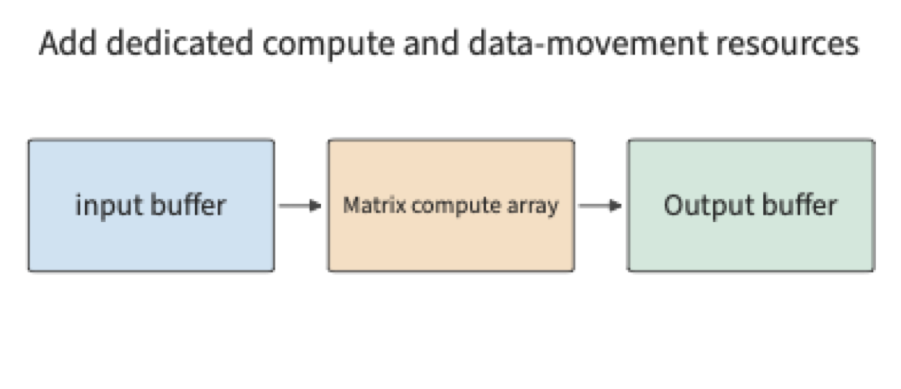
Chapter 4 introduces the TPU's matrix array, buffers, and data paths. Once the daily compute demand \(QF_1\) approaches the idle compute in the data centers, a dedicated processor can become more cost-effective than a general-purpose one.
1.4.2 SmartNIC¶
When Microsoft Azure designed its next-generation 40 Gbit/s cloud server in 2015, it faced a different kind of growth: rising network bandwidth alongside increasingly complex virtual network policies. A SmartNIC is a device capable of performing part of the data processing on the network card itself. Starting in late 2015, Microsoft installed FPGA-based SmartNICs in newly deployed Azure servers, and in 2016 it offered customers an Accelerated Networking service. Because an FPGA's hardware logic can be reconfigured, network processing can change as policies are updated.14
This design had to satisfy two requirements at once: leaving more CPU cores available for tenant applications, while still being able to quickly update rules for network isolation, forwarding, and access control. Network processing on a cloud server occupies exactly these CPU cores: besides running applications, the CPU must also handle packets sent and received. A virtual machine is an independent compute environment partitioned out of one physical host. When multiple virtual machines share the physical network, the platform must identify which data belongs to which machine, look up forwarding rules, perform encapsulation, and maintain isolation.
Start by estimating how much CPU this work consumes. A 40 Gbit/s link, under minimum-frame conditions, needs to process roughly sixty million packets per second. If a single core can process ten to twenty million packets per second, the number of cores needed for sustained forwarding is roughly
Here \(\lambda_{\mathrm{packet}}\) is the packet arrival rate and \(\mu_{\mathrm{core}}\) is the per-core processing rate. Higher link bandwidth raises \(\lambda_{\mathrm{packet}}\), while \(\mu_{\mathrm{core}}\) does not keep pace, so the number of cores required grows with their ratio. These cores repeatedly perform the same packet-processing pipeline; moving that work to the network card frees up CPU time for applications.9
Azure's approach was to let host software manage complex policy while handing packet-processing rules suited to repeated execution over to the FPGA. As data passes through the network card, this processing is completed there, freeing the CPU to spend more time on customer applications. The key to the design was balancing software update capability against hardware processing speed.
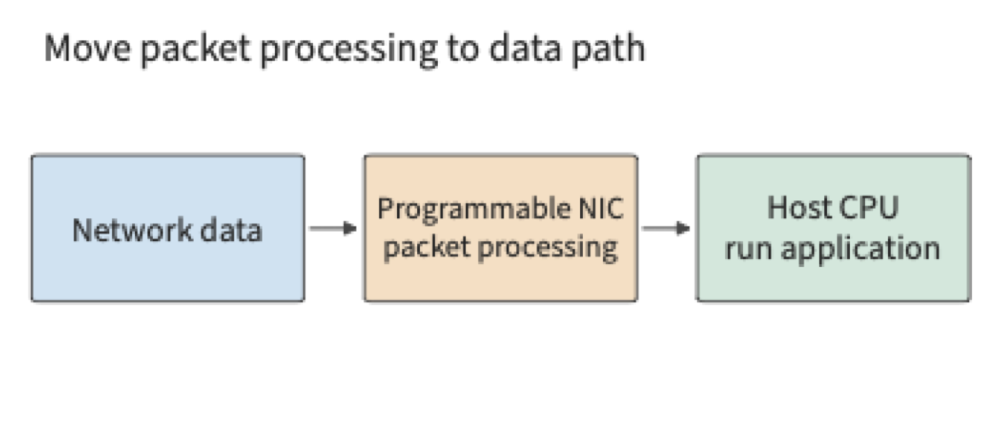
Once packet processing moves to the network card, some operations can be completed directly as data arrives, reducing the CPU's workload. If the network card still needs data in host memory, it must read it over PCIe; in that case, round-trip latency and the number of requests that can be issued concurrently determine the read speed. Chapter 7 analyzes this kind of access using KV-Direct, a system that lets a programmable network card handle key-value store requests directly. A key-value store looks up, reads, or updates a value by its unique key.
1.4.3 Unified Bus¶
The SmartNIC changed the division of labor within a single server. If the problem instead is that a single accelerator's total resources are insufficient, one must further consider how accelerators cooperate with each other. When a single accelerator cannot hold the model and its running state, one of the most direct solutions is to add more accelerators. But between "total capacity is larger" and "the task executes efficiently" lie work partitioning, data exchange, and synchronization.
For example, two cards' combined GPU memory might be enough to hold the weights, but the accelerator executing the computation must be able to access the data it needs. If one computation step depends on another card's result, it must wait for the handoff; if multiple cards jointly complete one operation, the corresponding collaboration must also be organized. Adding accelerators brings resources, but also adds the work of connecting those resources.
Huawei's UB (Unified Bus), developed for heterogeneous compute devices such as Ascend, expands the problem to multi-device collaboration. The author worked on this project from 2020 to 2023; the research had started in 2019, before OpenAI released the autoregressive language model GPT-3 in 2020; once GPT-3 demonstrated the capabilities of large models, the industry more broadly recognized the need for multi-device collaboration, and investment in the project expanded accordingly. The compute needed to train models grew far faster than the capability of a single accelerator; as that ratio kept widening, more and more accelerators had to work together.
The core requirement of this period was to let ever-growing models make use of multiple accelerator cards, and to let compute devices access memory and data on other devices more conveniently. Once data crosses a host boundary, software must switch to a message-passing interface, rearrange buffers, and pass through the network card driver and protocol stack — and each additional layer of abstraction adds more time. UB lets a device access another device's memory directly, removing these layers of abstraction so that the time cost of a remote access approaches the lower bound set by wire latency, while upper layers can also organize resources more flexibly. A unified access mechanism lets devices directly use resources across a wider range, while the topology determines the distance and bandwidth of these accesses. Model partitioning and interconnect design are thus tightly linked. Section 6.5.5 discusses UB's organization from the perspective of supernode scale, and Sections 7.3 and 7.4 trace the path of a single remote access to derive its latency, request rate, and connection state, and compute how much time each removed layer of abstraction originally occupied.
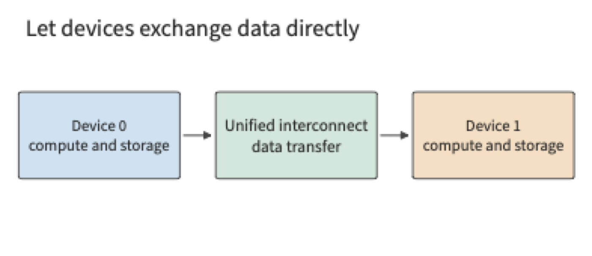
Take this chapter's two-card model deployment as an example: splitting the weights evenly satisfies the per-card capacity constraint, but each stage must still wait for input data and results from earlier stages. Adding accelerators changes \(M_{\mathrm{cap}}\) and the available compute, but also introduces new communication volume and dependencies. So the first step is to check whether each accelerator can hold the data it needs, the second step is to compute each accelerator's compute and read/write volume, and the third step is to compute the total time based on execution dependencies. No matter how large the model or how many accelerators, this analytical order still holds.
1.4.4 How Changes Propagate¶
Once deployed, the designs in these three cases create new constraints of their own. After FPGAs entered Azure servers, the cloud platform had to take on updating FPGA logic and handling its failures14; after UB joined large numbers of accelerators into one system, each synchronization had more devices to wait for and more components that could fail. In AI systems this propagation continues, and the table below lists its main links in the order of this book's chapters.
| Change | Assumption that no longer holds | Chapter |
|---|---|---|
| Neural network execution time concentrates in matrix operations | A general-purpose processor can handle the main computation at reasonable area and power | Chapters 4, 5 |
| Model weights exceed a single card's memory | One model fits on one card | Chapter 6 |
| Training and inference run synchronously across servers | Network traffic consists of independent flows that can be statistically multiplexed | Chapter 7 |
| Each read of the weights in decode performs little computation | Peak compute determines execution speed | Chapter 8 |
| Contexts grow and KV approaches or exceeds the weights in size | Context state is small and can be recomputed at any time | Chapter 9 |
| Training reaches thousands of cards | Failures are occasional events | Chapter 10 |
| Agent and RL workloads create tool environments in batches | Programs in containers are independent and set their own pace | Chapter 11 |
| Edge devices can run models | Centralizing computation in the cloud always shortens completion time | Chapter 12 |
Compared with general-purpose operating systems and cloud platforms, AI systems have one advantage: their workloads are few and known in advance. A general-purpose platform must run programs it knows nothing about beforehand, so it can rely only on uniform abstractions, strict isolation, and statistical multiplexing. AI systems are designed around a few models and well-defined execution processes; they can know in advance the computation and data dependencies described in Section 1.1.1 and use them to break through existing abstraction boundaries. For example, the RL sandbox platform in Chapter 11 pauses the relevant sandboxes on its own initiative, using preemption information from the training framework.
Many individual techniques in AI systems are not new inventions: the paged KV management in Chapter 8 borrows paging from operating systems, sandbox placement in Chapter 11 uses the power-of-k-choices randomized algorithm proposed in 2001, and memory reclamation in virtual machines uses the balloon mechanism proposed in 2002.15 Once ratios shift, methods that were previously unprofitable or unnecessary become worthwhile again; whether a technique fits must still be recalculated from the current ratios.
From speech inference, to cloud networking, to multi-device execution for large models, changes in demand and hardware determined which bottleneck had to be solved first, and redivided work among hardware, software, and interconnect. Against the six-layer diagram from the opening, every one of these designs reorganized computation and data movement. Three threads run through the chapters that follow: shifting ratios explain why a new design is needed, data movement shows what the new design changes, and the physical limits of Section 1.3.4 measure how far the design has gone. From these the book's main thread unfolds: data movement shapes the architecture of AI Infrastructure.
Common Pitfalls¶
Pitfall: doubling peak compute doubles execution speed. First check whether the current execution is actually compute-bound. In Example 1-1, the lower bound on weight-read time is far larger than the lower bound on matrix-compute time, so raising peak matrix compute barely changes the lower bound on execution time; and if the optimization targets only part of a complete task, Amdahl's law must also be used to check the ceiling on the benefit.
Pitfall: if GPU memory can hold the weights, it can support the target concurrency. Weights are only part of the resident data. Context state, workspace, and runtime reservations all occupy GPU memory together, and on multiple accelerators each card must be checked individually.
Pitfall: 30% faster than the old implementation means the optimization succeeded. Without knowing the limit the hardware allows, there is no way to tell whether that 30% is close to the ceiling or still an order of magnitude away. One should first compute the limit, then follow the order in Section 1.3.4 to determine whether the gap comes from a model gap or from system overhead.
Pitfall: a system that matured in the previous generation of workloads can be used directly for new ones. Every system design presumes the ratios of its time. General-purpose container platforms assume requests come from independent tenants and that programs set their own pace; sandboxes in RL training are created in batches and paced by the GPU side, so copying the old design leaves expensive accelerators idle (Chapter 11). Before reusing a design, check whether the ratios it depends on still hold.
Pitfall: higher throughput means shorter wait time for each user. Within-batch reuse reduces the read overhead amortized per output, but each request must still go through queueing and full-batch execution. Throughput and response time should be reported together.
Chapter Numbers Quick Reference¶
This table summarizes, on the model side, the key metrics measured for Qwen3-8B in Section 1.3.3. Prefill processes existing input in one pass and produces the first output; decode feeds one new token into the model at a time, continuing generation using the already-saved KV. This table fixes BF16 weights, activations, and KV, with concurrency of 1; prefill's input is 2048 tokens, and decode executes one step after a context of 2048 tokens already exists.17
| Model Requirement | Value | How to Use It |
|---|---|---|
| Full BF16 weights | 16.38 GB | Determines the GPU memory required to load the model |
| Full-model KV per context token | 144 KiB | Multiply by context length to get single-request KV capacity |
| KV for a 2048-token context | 288 MiB | About 0.302 GB, scales with the number of independent requests |
| Matrix compute for 2048-token prefill | 29.69 TFLOPs | Divide by the corresponding matrix compute rate to get the compute-time lower bound |
| Matrix compute for one decode step | 16.34 GFLOPs | Input is one token, plus access to the existing context |
| Primary weight reads for one decode step | 15.14 GB | Weights are read once; the embedding layer (a lookup table mapping token IDs to vectors) reads only the row for the current token |
| Old KV reads for one decode step | 0.302 GB | Bytes read when each context's KV is read once |
Estimating the lower bound on execution time from compute and read volume. Using the RTX PRO 6000 Blackwell Workstation Edition employed for the measurements in Figures 1-13 and 1-14, first compute the matrix compute and data reads separately: at a matrix peak of 503.8 TFLOP/s, prefill's matrix compute requires about 58.9 ms, and decode requires about 0.0324 ms; at a GPU memory bandwidth of 1.792 TB/s, one decode step's primary weight and old KV reads require about 8.62 ms. The measured output interval at batch size 1 is about 26.5 ms, roughly three times this read lower bound; the source of this gap is discussed in Section 1.3.4. Here compute and reads are each estimated for their minimum required time separately; a complete execution must also add other operations, actual memory access, and startup time along the operator sequence. Chapters 2–5 will build up these computations term by term.
These numbers explain the difference between the two stages: prefill processes a large amount of input in one call, so its matrix workload is larger; single-request decode processes only one token at a time, yet still must read a large volume of weights and context. Raising compute throughput, raising bandwidth, and increasing within-batch reuse each act on a different time term.
Chapter Summary¶
Applications express behavior through models and context, and many tasks therefore share similar underlying computations. By grasping the computational dependencies within a model and how long state remains resident, we can jointly consider design choices that used to belong to separate layers: changing data representation, merging execution steps, reusing preparation work, or shortening the time spent on data transfer and synchronization between accelerators. Subsequent chapters will quantify the benefits of these changes, show which design trade-offs shift as a result, and then select models and system schemes based on the new constraints.
When analyzing a system, first check whether the data fits, then use computational complexity and read/write volume to estimate elapsed time, and finally analyze overlap and waiting based on execution order. A lower bound computed from peak values is the hardware's physical limit; the ratio of this lower bound to the measured result is the utilization. Any gap between the two means either the model is missing a term or the system has overhead that can be eliminated. In the 70B example, reading weights is about 148 times slower than the matrix computation, so increasing bandwidth, reducing reads, and improving reuse all help shorten the time. Within-batch sharing can raise throughput, but each request's response time must still include the entire batch's execution and queueing.
The core exercises for this chapter are 1-2, 1-3, and 1-4, which practice unit conversion and feasibility judgment, resource estimation after changing conditions, and comparison of predicted and measured results, respectively. The next chapter will refine the estimation of \(2N\) computational complexity and weight read volume based on real model configurations, providing concrete matrix dimensions and state sizes for these calculations.
-
The "eighteen-tier pagoda" was proposed by Dr. Liao Heng, Chief Scientist of Huawei Semiconductors, in a public long-form interview in July 2026, to describe the layer-by-layer dependencies from application down to manufacturing process. ↩
-
Jeff Dean, LADIS 2009 talk, local PDF, "Numbers Everyone Should Know" and the back-of-envelope estimation section. The seek-time example assumes 20 consecutive random reads. ↩
-
NVIDIA, H100 architecture whitepaper and specification page snapshot. This chapter uses the SXM form factor and BF16 dense matrix compute specification; the original input version and verification values are in the figure source list. ↩
-
70B approximate budget recomputation and accompanying scenarios; unit and per-card capacity recomputation. The time-estimate figures in 1.3 read from this fixed set of 70B approximate results; the capacity figure in 1.2.3 uses the real weight index and grouped-quantization results. ↩
-
Williams, Waterman, Patterson, Roofline paper. ↩
-
Follow-up measurement record and accelerator event timing. The follow-up measurement also disabled the prefix cache and reconstructed the input, so the effect of step-by-step logging cannot be fully isolated from these conditions; the accelerator events cover only model execution, excluding sampling and output. ↩
-
Exercise 1-4 record notes, structured analysis results, and follow-up measurement. The main text and Figures 1-13 and 1-14 use the initially recorded short-input group. ↩
-
Jouppi et al., TPU v1 paper, Section 2 on origin, architecture, and implementation. The three-minutes-of-speech-search figure is a historical demand forecast recorded in the paper. ↩
-
Author's doctoral dissertation, Section 4.2.1 simple forwarding baseline; core-count budget recomputation. The roughly sixty million packets per second figure comes from computing 40 Gbit/s against a per-frame occupancy of 84 bytes on the wire; 3 to 6 cores corresponds to the simple forwarding baseline. ↩
-
See the related abstraction-boundary survey; for the discussion of foundation models supporting multiple downstream tasks, see Stanford CRFM. ↩
-
The request diagram illustrates general responsibilities; the division of scheduling and state-management responsibilities can be referenced against the v0.26.0 vLLM Scheduler documentation; the measurements in Section 1.3.3 use vLLM 0.23.0. Routing policy, tokenizer placement, and whether prefill and decode are separated are deployment choices. ↩
-
For a concrete product example, see NVIDIA GB200 NVL72, the hardware guide, and the networking guide. Figure 1-5 uses a generalized connection. ↩
-
Parameter counts and BF16 byte counts come from the DeepSeek-R1-Distill-Llama-70B public weight index and the fixed-version configuration. The total weight volume under grouped quantization uses the model-wide summary in the itemized computation record, with 128 parameters per group and 2 bytes per scale. The nominal 24 GB specification for the RTX 4090 is from the official page archive. This section uses the nominal specification GB as the unified capacity budget. ↩
-
Firestone et al., Microsoft, Azure Accelerated Networking: SmartNICs in the Public Cloud, NSDI 2018; original paper text. The abstract gives a deployment date of late 2015 and customer availability in 2016; Section 3 describes the design goals of reducing CPU consumption, preserving programmability, and supporting higher bandwidth. ↩↩
-
For power-of-k-choices, see M. Mitzenmacher, The Power of Two Choices in Randomized Load Balancing, IEEE TPDS, 2001; for the balloon mechanism, see C. A. Waldspurger, Memory Resource Management in VMware ESX Server, OSDI 2002. Both are cited by the DSec paper; the corresponding mechanisms appear in Sections 11.2.2 and 11.3.2. ↩
-
Figures taken from the fixed GPU specifications and itemized sources, corresponding to
rtx4090,a100-80gb-sxm, andh100-sxm; precision, accumulation method, and dense conditions are each verified separately. GB and TB in this table are decimal units throughout. ↩ -
Quick-reference number recomputation source tabulates prefill and decode matrix compute based on the fixed Qwen3-8B configuration; read volumes come from the within-batch weight reuse computation. Weight consumption includes the full embedding table; during step-by-step generation only the embedding row for the current token is read; read/write times assume ideal conditions of one access per primary data item. ↩
-
DeepSeek V4.1 official technical report, Sections 1, 2, 3, and 6; fixed conditions and recomputation for the cross-chapter session. ↩